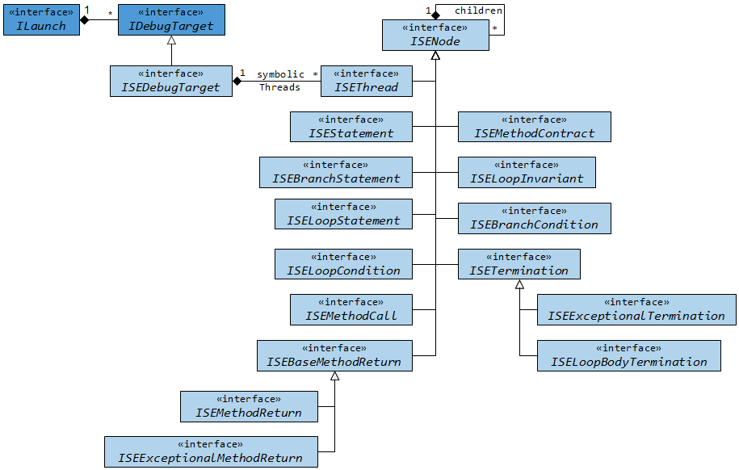

symbolically")
 symbolically")
"Run, Debug As, Symbolic Execution Debugger (SED)".
The Symbolic Execution Debugger (SED) is a platform for symbolic execution in general and allows to interactively debug programs based on symbolic execution. Symbolic execution discovers all possible execution paths simultaneously. This is achieved by the use of symbolic in lieu of concrete values resulting in a symbolic execution tree. Each node in the symbolic execution tree provides the full state and related information such as the symbolic call stack or the path conditions under which the node is reached.
Execution can start at any method or at any statement without setting up a context. Navigation is realized using classic debugger functionality, including stepwise execution or breakpoints.
The screenshots of the following sections illustrate the main features of SED using KeY as symbolic execution engine. Each section contains numbered screenshots that explain a usage scenario step by step. Clicking on each picture produces a more detailed view. The screenshots may differ from the latest release. At the end of this webpage we briefly describe the architecture of SED and the theory behind it.
The Symbolic Execution Debugger is compatible with Eclipse Indigo (3.7) or newer.
Required update-sites and installation instructions are available in the download area.
As getting started guide for new users we recommend the tutorial using the SED examples.
In addition, participation in the evaluations allows you to try out the SED in a guided way by hand of different examples.
 symbolically")


")
")
The Symbolic Execution Debugger (SED) extends Eclipse and can be added to existing Eclipse-based products. In particular, SED is compatible with the Java Development Tools (JDT) that provide the functionality to develop Java applications in Eclipse. To achieve this and also a user interface that seamlessly integrates with Eclipse, SED consequently uses and extends the Eclipse platform as shown by the following graphic:
| KeY Debug Core | KeY Debug UI | ||||
| Symbolic Debug Core | Visualization UI | ||||
| Symbolic Debug UI | |||||
| JDT Core/Debug | Debug Core | Debug UI | JDT UI | ||
| Workspace | Workbench | ||||
The core of Eclipse is the Workspace managing projects and the user interface (Workbench) with editors, views and perspectives. Based on this, provides the Debug Platform language independent facilities for debugging (Debug Core and Debug UI). Finally, JDT offers functionality to edit and debug Java programs (JDT Core/Debug and JDT UI).
Symbolic Debug Core extends the debug model of the Debug Platform for symbolic execution in general independent from languages and symbolic execution engines. Additional UI extensions (Symbolic Debug UI) and visualization capabilities (Visualization UI) are also available.
At last, KeY Debug Core implements the extended debug model for symbolic execution based on KeY's symbolic execution engine. The required extensions to the user interface to launch Java methods and statements symbolically are provided by KeY Debug UI.
The SED platform allows to integrate different symbolic execution engines with purpose of debugging, program understanding or to control analysis based on symbolic execution. All to be done is to realize the extended debug model for symbolic execution and to offer user interface extensions to start symbolic execution. An example implementation showing how to integrate a symbolic execution engine into the Symbolic Execution Debugger, can be found here.
The Eclipse Debug Platform provides language independent facilities for debugging.
This is achieved by a language independent debug model which is implemented for different languages like Java.
Once a program is launched, it is represented as ILaunch and provides access to the debuggable execution context.
The debuggable execution context is defined by IDebugTarget instances and allows for instance to list the currently running threads (IThread).
For more details about the Debug Platform we refer to the article How to write an Eclipse debugger.
The debug model reflects the structure of running programs and is not designed for symbolic execution by default. But it can be reused and extended for symbolic execution as the following image shows:

If something is launched symbolically (ILaunch), the debuggable execution context is defined by ISEDDebugTarget instances which is a subtype of IDebugTarget.
It provides access to the root of a symbolic execution tree represented as ISEDThread instance.
All nodes within a symbolic execution tree are subtypes of ISEDDebugNode that allows to access child nodes and the parent node.
Beside the start node (ISEDThread) represent ISEDStatement, ISEDBranchStatement, ISEDLoopStatement and ISEDLoopCondition different kinds of statements.
A method call treated by inlining is reprehend by an ISEDMethodCall and the return of the called method by ISEDMethodReturn or ISEDExceptionalMethodReturn instances.
Alternatively, method calls can be treated by applying contracts (ISEDMethodContract) and loops by applying a loop invariant (ISEDLoopInvariant) instead of unrolling it.
If execution splits into several branches ISEDBranchCondition nodes show the condition under which each path is taken.
Finally, symbolic execution terminates normally (ISEDTermination) or exceptionally with an uncaught exception (ISEDExceptionalTermination).
Branches executing only the loop body after an applied loop invariant end usually in an ISEDLoopBodyTermination node as long as the loop does not terminate abnormally.
A general purpose symbolic execution engine based on KeY is developed together with the Symbolic Execution Debugger. It uses only Java functionality and can be used outside of an Eclipse setup.
KeY is a semi-automatic verification tool that proves the correctness of sequential Java programs (without garbage collection, dynamic class loading and floats) annotated with JML specifications. Within a proof, symbolic execution is mixed with the evaluation of logical formulas. KeY operates on the source code level and thus a static symbolic execution is performed meaning that the program is never actually executed.
KeY's Symbolic Execution Engine constructs a proof and extracts the symbolic execution tree from it. The main difference to verification is that no specifications are needed at all. But if they are available, they can be used during symbolic execution. Loop invariants ensure finite proof trees in presence of loops. Method contracts allow to treat methods for which the source code is not available and guarantee finite proof trees in presence of recursive method calls.
A specific proof strategy ensures that the proofs from which the symbolic execution tree is extracted have a suitable shape. That strategy also guarantees that symbolic execution is done in the correct order of Java semantics.
The symbolic execution engine as such is fully automatic. In rare cases side proofs of logical formulas (e.g., the fulfillment of pre- and postconditions) may remain open if the strategy is not powerful enough to discharge them.
{kind=link}
{kind=link}
{kind=link}
{kind=link}
{kind=link}
{kind=link}
{kind=link}
{kind=link}
{kind=link}
{kind=link}
{kind=link}
{kind=link}
{kind=link}
{kind=link}
{kind=link}
{kind=link}
{kind=link}
{kind=link}
{kind=link}
{kind=link}